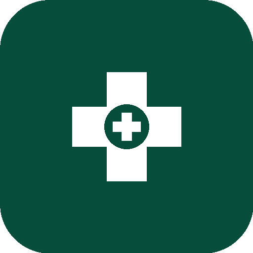

Quick
Med
Africa
MSAS Actif
Bienvenue,
Agent de santé
👋
47
Protocoles
12
Urgences
5s
Réponse IA
2G
Offline-ready
📚
Explorer
🤖
Assistant IA
🚨
Urgences
Pathologies
Symptômes
Médicaments
🏥 Pathologies MSAS
🔍 Symptômes clés
💊 Médicaments essentiels
🤖 Assistant Clinique QuickMed
Basé sur les protocoles officiels MSAS · Sénégal
⚕️
Bonjour ! Je suis l'assistant QuickMed Africa. Décrivez votre cas clinique (âge, poids, symptômes) pour obtenir le protocole MSAS adapté.
📋 Source : Protocoles MSAS Sénégal 2025
🦟 Paludisme enfant
🤰 HTA gravidique
💧 Diarrhée enfant
🫁 Tuberculose
⚖️ Malnutrition
➤
🚨
Protocoles d'urgence
Protocoles MSAS validés · Accès hors-ligne